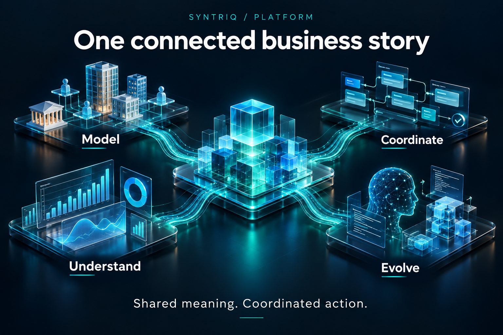

⌘
01Model what matters.
Define entities, relationships and business meaning through an ontology-driven model. Access supported data and metadata through typed GraphQL interfaces.
Connect business models, rules, processes and insights—with AI that works from the context of your application.
Data describes your business. Processes move it forward. Syntriq brings both into a shared development experience, so the connections stay in view.
Define entities, relationships and business meaning through an ontology-driven model. Access supported data and metadata through typed GraphQL interfaces.
Connect events, business decisions and tasks through explicit process contracts. Make the path from a fact to a permitted action inspectable.
Connect application definitions, selected context and engineering tools in a browser-first workspace. Examine candidate changes through visible evidence.
A focused workspace for the people building your business systems. Explore your data, shape your schema and design the next step.
Consider a customer onboarding journey. The customer, the agreement and the work to be done belong to the same business story.
Model the customer and their agreements as related entities.
Map the review and activation steps into an explicit process.
Explore the data and relationships behind each business decision.
Illustrative business scenario
Temporal intelligence connects what happened, when it applied and what was known at the time.
Historical relationships and correction-aware reporting bring the context behind a business result into view.
Explore the connected story ↗A fact enters your business story.
01A correction changes the context.
02Originally known. Subsequently corrected.
03
Connect the meaning of your data, the flow of your work and the evidence behind every decision.
Read the story ↗
Connect AI to the application’s current components, rules and evidence, so each proposed change starts with understanding.
Read the story ↗
Follow an approval-rule change from the engineer’s request to an inspectable candidate and its checks.
Read the story ↗Explore the ideas behind Syntriq: shared models, coordinated processes and AI-assisted engineering.
Explore the platform ↗